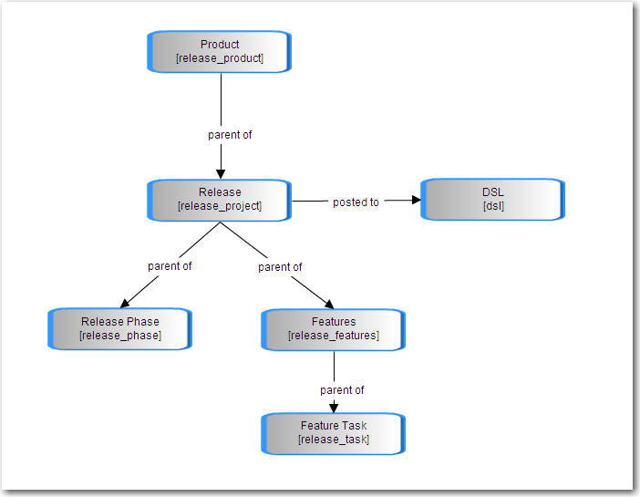
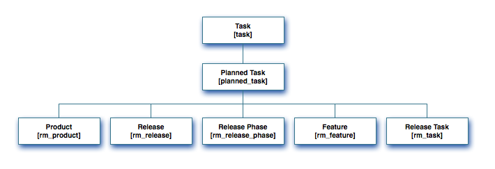

Moving from Release v1 to Release v2
| |
Note: This article applies to Fuji and earlier releases. For more current information, see Release Management at http://docs.servicenow.com
The ServiceNow Wiki is no longer being updated. Visit http://docs.servicenow.com for the latest product documentation. |
| |
Functionality described here requires the Release Management v2 plugin. |
Contents
1 Overview
Release Management Plugins enhance release functionality by implementing a new data structure and new user interfaces to make managing a release more flexible and more powerful.
2 Upgrading from Release v1 to Release v2
To upgrade from Release v1 to Release v2, simply activate the appropriate plugin.
Activating the plug in will create a new application and new tables. The old applications and tables will not be deleted; the Release application will be deactivated, but is accessible through System Definitions > Applications.
The existing Release data will not be converted into Release v2 data, but will be accessible through the old application for historical purposes.
3 Comparing Release v1 to Release v2
Once the new plugin is activated, make sure to review the new data structure and user interfaces to understand how Release v2 differs from the original Release Management application.
3.1 New Data Structure
3.1.1 New Tables
Each of the different Release Management Plugins implements a different set of tables (see Release Management Plugins for specifics). These tables differ from the old Release tables because they are now extensions of the Planned Task table, meaning they can now use all of the functionality specific to the Task table (such as Approval and Assignment Rules), as well as the standard time-related functionality provided by Planned Task.
3.1.2 New Table Relationships
The change in the data structure is not simply new tables. The relationships between the tables are implemented differently, to allow more flexibility.
The old tables were separate tables related by a parent-child relationship:
|
{kind=link}
The new tables are now all extensions of the Planned Task table:
|
{kind=link}
Individual records can be associated with themselves in parent-child relationships using the Parent reference field available to all of them. However, because the Parent reference field can point to any task, records on the release tables can be associated with any records anywhere on the release table. Therefore, it is possible to have Parent and Child releases and Parent and Child features.
In this example (displayed using the hierarchy view), the Product has Releases is broken up into sub-releases, which have child features defined:

3.2 New User Interfaces
3.2.1 Release Management Hierarchies
The Hierarchy view of Products and Releases can be found from a related list on the form:
3.2.2 Release Management Process Flow
The Release and Feature forms include a process flow, which displays the current status of the record based on the State field. These are generated using the Process Flow Formatter Plugin:
{kind=link}
3.2.3 Release Gantt Chart
Releases can also be managed using the Gantt Chart:
{kind=link}